Recognition
The Baly name remains the hero while a compact Brazil silhouette retains a familiar geographic cue.
A visual repositioning built to keep Baly recognizable while giving five flavors one bold, coherent shelf presence.
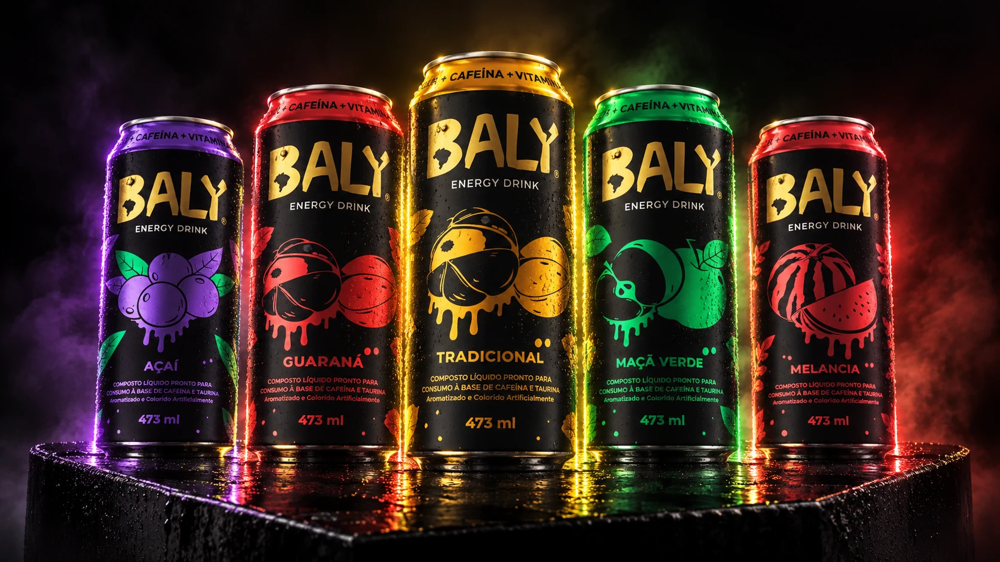
Modernize the brand for a younger audience without erasing the recognition it had already built.
The academic brief called for a full visual repositioning of Baly Energy Drink. The answer was not a single label, but a flexible family: one unmistakable black-and-gold brand core supported by expressive illustrations and a clear color code for every flavor.
The system was developed across the redesigned logo, five 473 ml cans and a set of campaign-ready visual assets.
The Baly name remains the hero while a compact Brazil silhouette retains a familiar geographic cue.
Heavy handmade letterforms and a fractured “Y” turn the wordmark into an energetic focal point.
Lightning bolts extend the identity beyond the logo and create rhythm across packaging and campaigns.
The black can creates a consistent silhouette. Gold owns the brand. A flavor color, fruit character and matching details do the navigation.
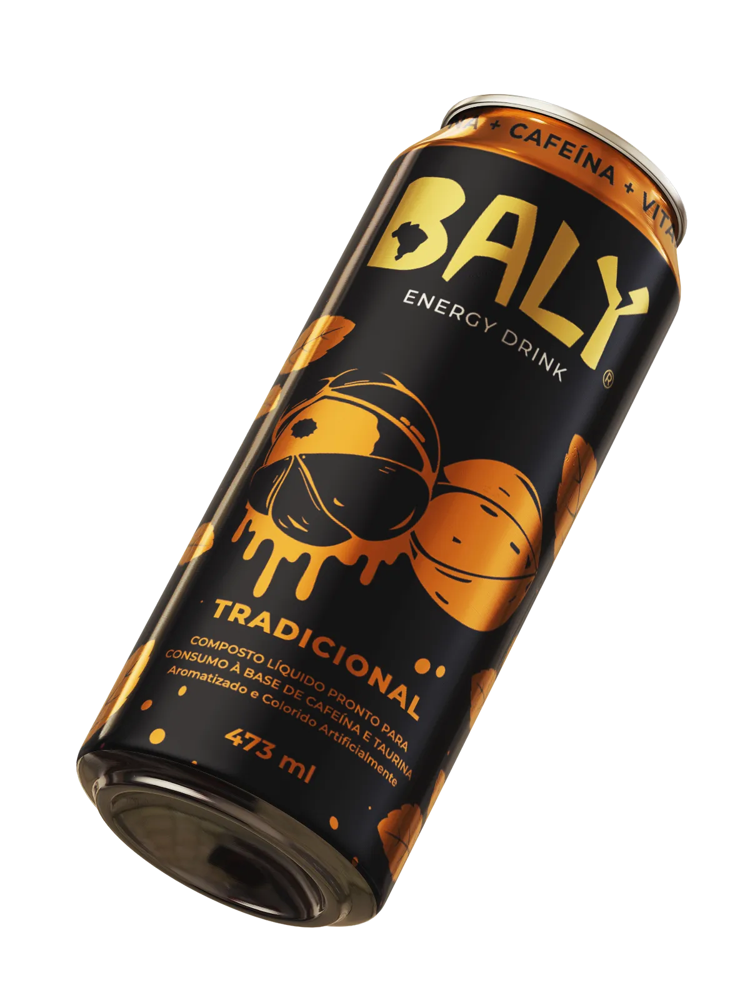
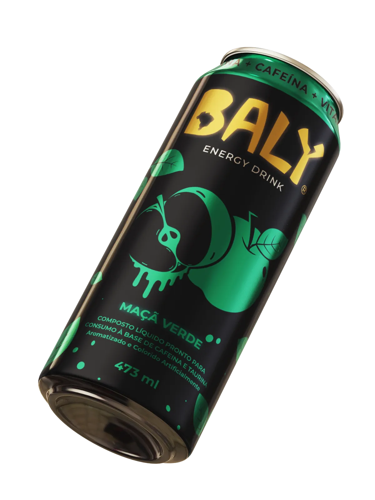
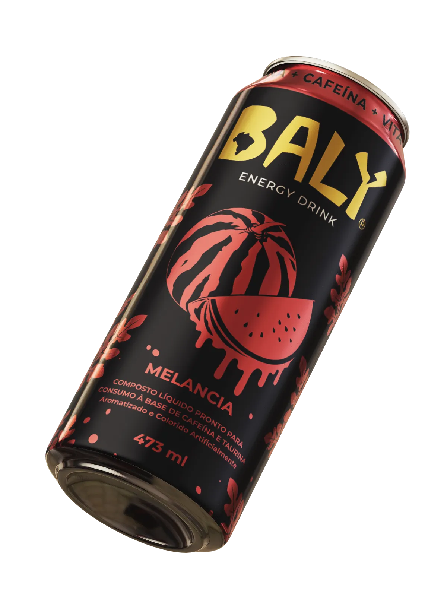
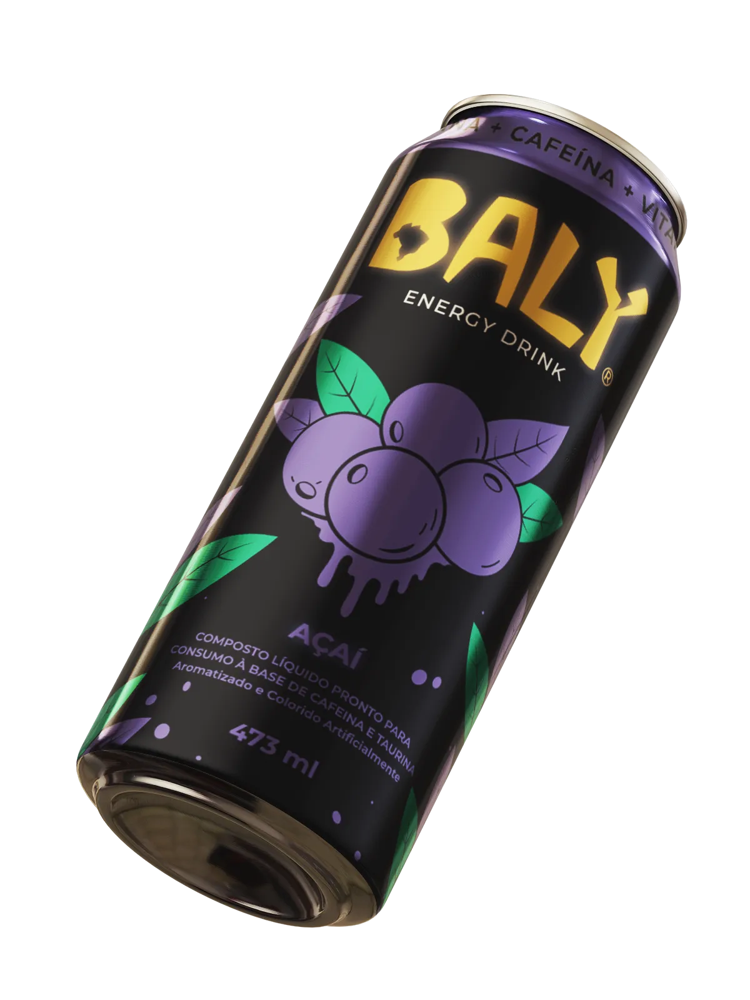
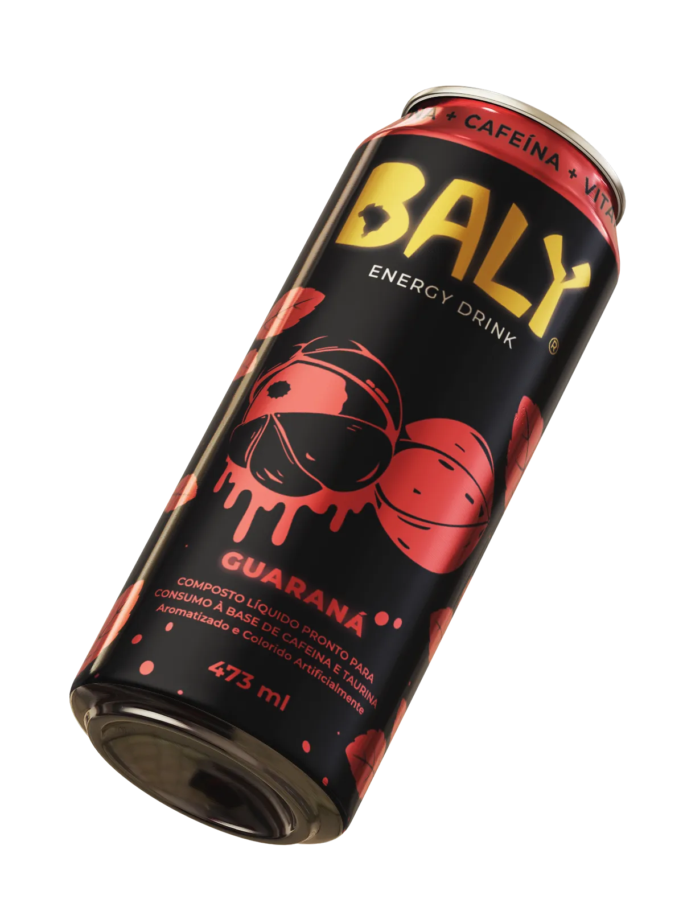
Each fruit is reduced to a compact, high-contrast illustration with leaves, droplets and outlines. Repetition turns those components into patterns that can move from the can to campaign layouts.
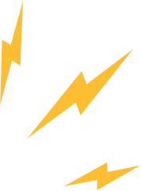
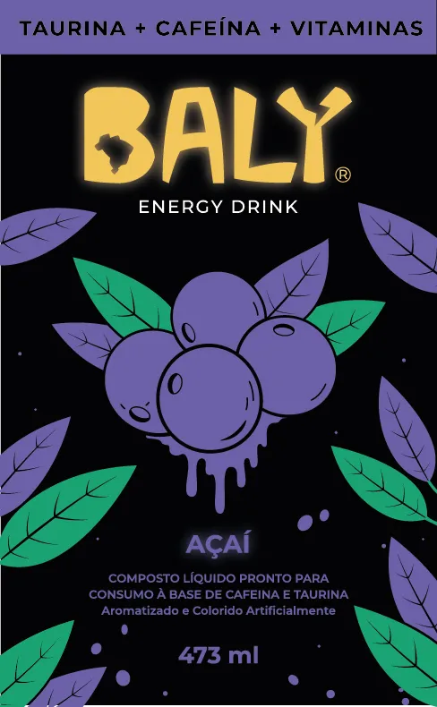
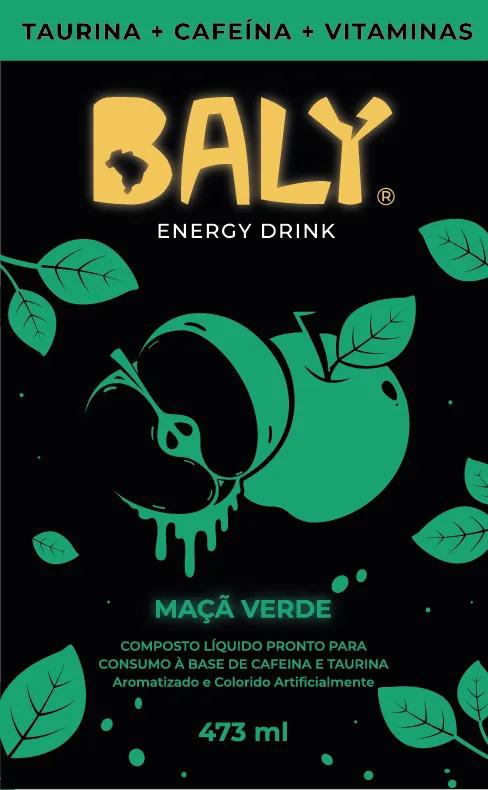
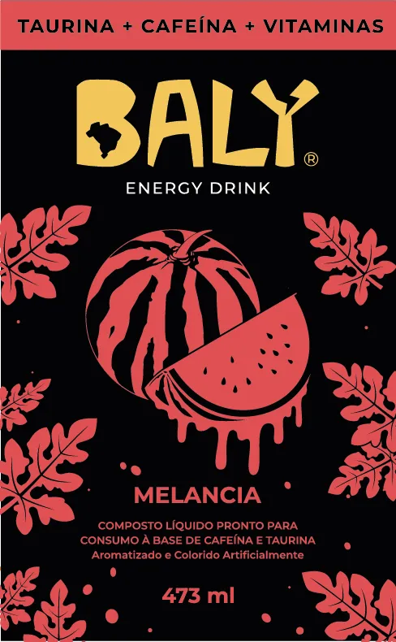
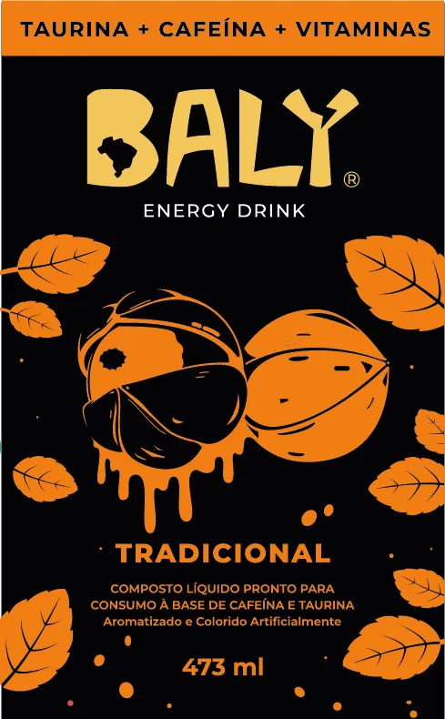
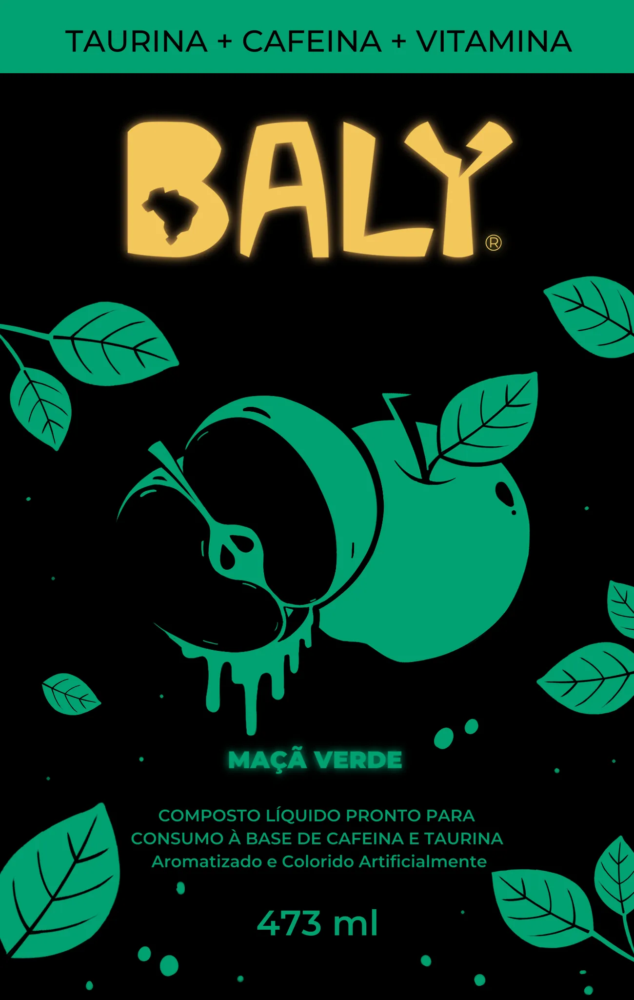
New portfolio mockups test the identity at three scales: a close product moment, a lifestyle environment and the repeated rhythm of a retail display.
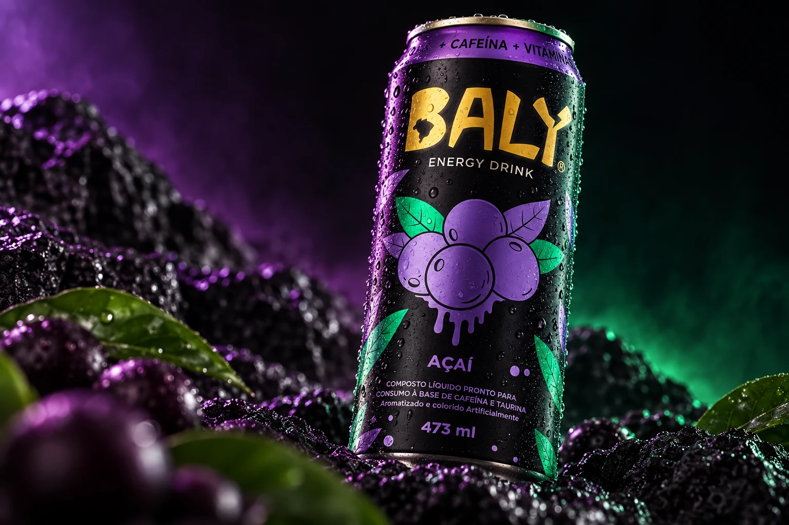
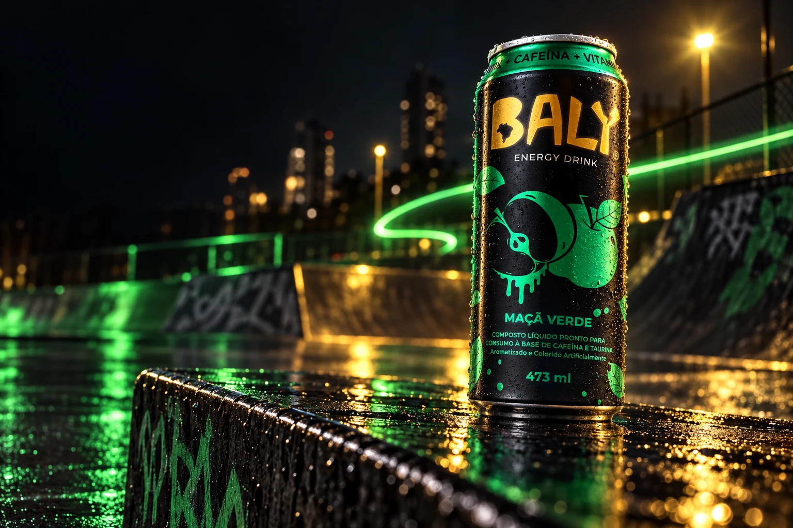
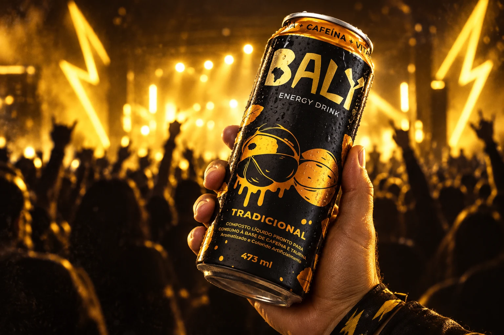
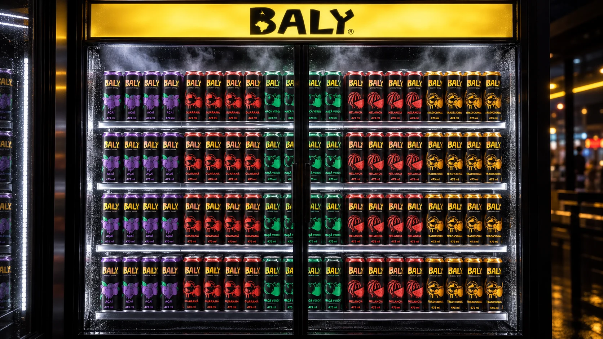
The strongest result is the system itself: every can can change color and illustration without losing the shared Baly silhouette. The project demonstrates how a rebrand can preserve familiarity while creating more space for attitude, navigation and campaign expression.